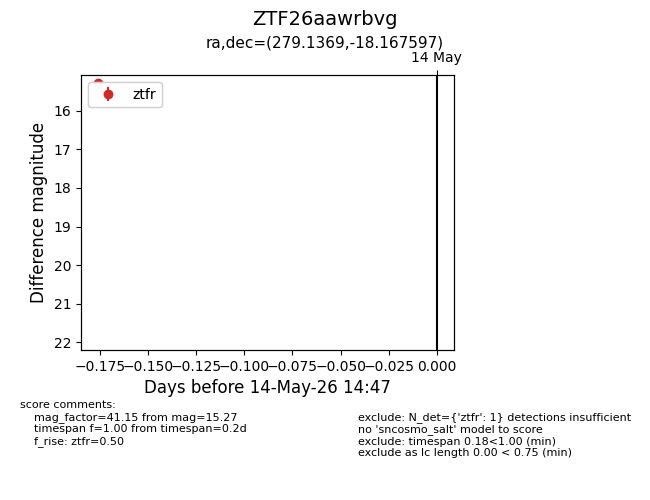
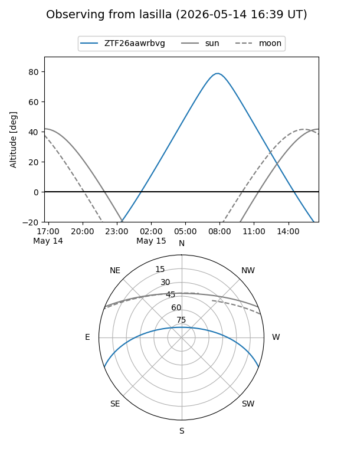
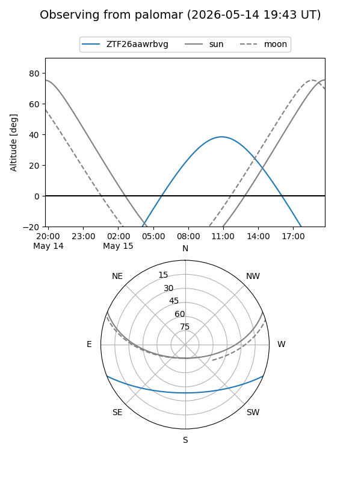

ZTF26aawrbvg
Target ZTF26aawrbvg at 2026-05-14 14:48
Aliases and brokers:
FINK: link
Lasair: link
ALeRCE: link
alt names
ZTF26aawrbvg (ztf,fink_ztf)
Coordinates:
equatorial (ra, dec) = 279.1369,-18.16760
equatorial (HMS+DMS) = 18:36:32.87,-18:10:03.35
galactic (l, b) = (15.0657,-5.00674)
Flags:
Photometry:
last ztfr=15.27
1 ztfr detections
Lightcurve

Visibility


Additional plots